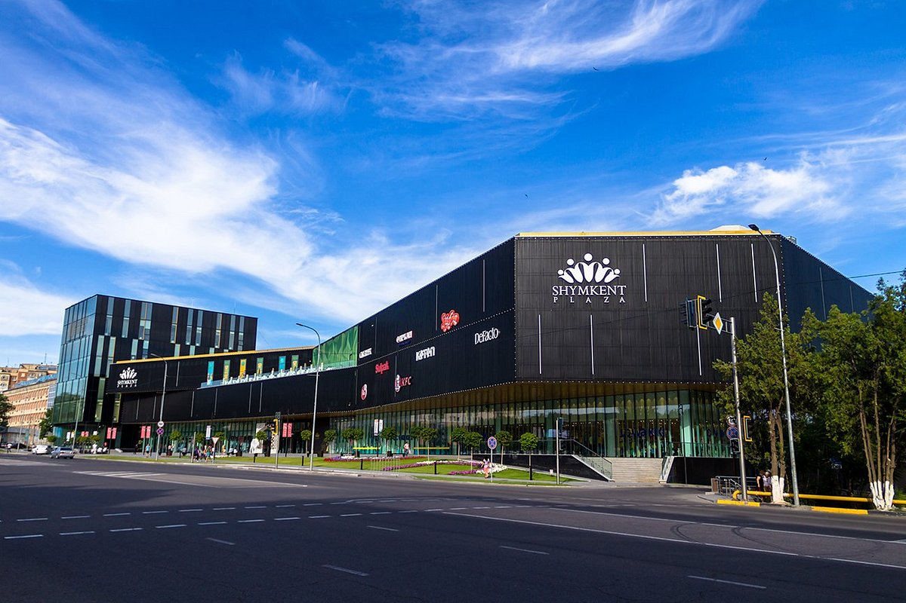

Mega Planet Shymkent
Торгово-развлекательный центр Mega Planet Shymkent — воплощение
современного шопинга и разнообразных развлечений в южном регионе Казахстана.
Светлый и просторный торговый комплекс предлагает посетителям широкий выбор
мировых брендов, модных бутиков и уютных кафе.
Здесь современный дизайн сочетается с удобствами для покупок,
а многочисленные развлекательные зоны, включая кинотеатр, игровую площадку и рестораны,
создают атмосферу для отличного проведения времени с семьей и друзьями.
Mega Planet Shymkent становится не только местом для шопинга,
но и центром социокультурной активности, предлагая посетителям полный спектр
удовольствий и развлечений.
Адрес: Проспект Тауке хана, 13 | Телефон: +7 (7252) 53‒01‒00

Shymkent Plaza
SHYMKENT PLAZA - это крупнейший в городе Шымкент торгово-развлекательный центр, общая
площадь
которого достигает 48 400 квадратных метров. За архитектурное оформление этого
уникального проекта
ответственны выдающиеся эксперты, известные своей работой над проектами таких знаменитых
объектов,
как Westfield в Лондоне, Elements в Сингапуре, Ferrari World в Абу-Даби и DOSTYK PLAZA в
Алматы – архитектурное бюро Benoy из Великобритании. SHYMKENT PLAZA представляет собой
центр мирового
уровня, предназначенный для комфортного шопинга и приятного времяпрепровождения.
Адрес: Площадь Аль-Фараби, 3/1 | Телефон: +7 (7252) 61‒05‒15
Diamond Plaza
Diamond Plaza Shymkent — это ультрасовременный торгово-развлекательный комплекс,
воплощающий
элегантность и роскошь в самом сердце Шымкента. С общей площадью, призванной
удовлетворить самые
изысканные вкусы, Diamond Plaza предлагает высококлассные магазины, модные бутики и
изысканные
рестораны. Архитектурный шедевр, разработанный опытными дизайнерами, создает уютную
атмосферу для
элитного шопинга и культурных впечатлений. Этот центр становится не только местом для
приобретения
уникальных товаров, но и площадкой для общения, отдыха и наслаждения роскошью в каждой
детали.
Diamond Plaza Shymkent — ваш путь к стилю и изыску.
Адрес: Проспект Нурсултана Назарбаева, 177Б | Телефон: +7‒702‒816‒10‒27
Hyper House
Hyper House — это один из крупнейших и современных торгово-развлекательных центров в
городе, занимающий
участок площадью 5 га в соответствии с европейскими стандартами. Расположенный в
Северо-западной части
города на пересечении улиц Дулати и Рыскулова, Hyper House выгодно выделяется своим
удобным расположением
близко к культурным и деловым центрам. С общей площадью 20 тыс. кв. м., центр включает в
себя таких якорных
арендаторов, как гипермаркет "MAGNUM", магазины бытовой техники "SULPAK", многозальный
кинотеатр "KINOPARK",
а также магазины "KARI", "Детский мир" и другие. Наземная парковка на 200 машиномест
обеспечивает дополнительные
комфортные условия для посещения центра в любое время года.
Адрес: ул. Дулати, 200А | Телефон: 8 (725) 252-10-92
Nauryz Park
Nauryz Park - это яркий символ современного шопинга и развлечений в городе. Расположенный
в удобной части Шымкента,
торгово-развлекательный центр занимает внушительную площадь и предлагает посетителям
уникальный опыт. От стильных
бутиков до разнообразных развлекательных мероприятий, Nauryz Park создает атмосферу для
приятного времяпрепровождения.
Якорными арендаторами являются разнообразные магазины, включая гипермаркеты и брендовые
магазины, а также места для
отдыха и развлечений. С Nauryz Park Shymkent каждая покупка превращается в удовольствие,
а каждое посещение становится
неповторимым и насыщенным событиями.
Адрес: Проспект Байдибек би, 25 | Телефон: +7‒702‒793‒88‒05
Rahima Plaza
Rahima Plaza — это современный символ элегантности и утонченного шопинга в городе.
Стратегически расположенный в центре,
этот торгово-развлекательный комплекс предоставляет посетителям уникальный опыт
современного шопинга в элитной атмосфере.
С ярко выраженным дизайном и высококлассными магазинами, включая роскошные бутики и
изысканные рестораны, Rahima Plaza
становится центром привлекательности для ценителей стиля и комфорта. Являясь идеальным
местом для культурных и модных встреч,
центр обещает удовлетворить самые изысканные вкусы и предложить неповторимый опыт
покупок.
Адрес: Микрорайон Нурсат, 7/1 | Телефон: +7 (7252) 39‒35‒23